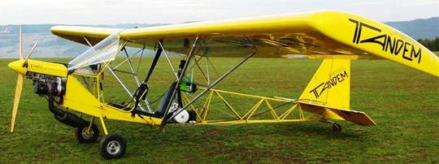
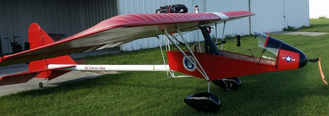
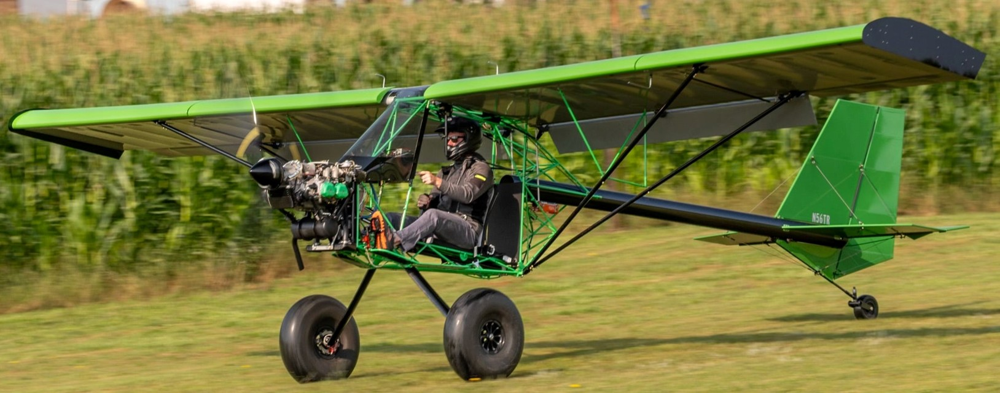

A few years back I saw a video from Peter Sripol where he built an FAA Part 103 Ultralight and since then have been immensely jealous.
Recently, my roommate moved out which in combination with having far more free time means it’s time to build an airplane in my 4th floor LA apartment!
One of the things that drew me to the Ultralights vs. other light sport aircraft was the regulations.
Part 103 allows you to build/buy and then fly an airplane with effectively no regulation on either the building or flying.
The few existing regulations also made it dangerously easy for someone who has never designed an RC plane to attempt manned flight.
With that said what follows are the broad decisions I’ve made, constraints I face (regulatory and physical), and an overview of the project that makes the motorcycle feel safe.
Requirements & Goals
Part 103 is pretty simple, it dictates a fixed weight, max speed, stall speed, as well as operating restrictions on time of day, airspace, etc.
These may seem like something you could check your design against in the final phase, and for experienced builders that may be the best approach, but for me they provided incredible early phase requirements.
If you take the mass to be worst case, speeds to be worst case, etc. you can actually get through the vast majority of a first pass sizing attempt without any painful optimization or time spent lost in largely dimensioned design space.
In addition to operating legally (to the best of my judgment—so help me God), I had serious goals for the project.
These spanned the technical ground I wanted to cover as well as the vehicle’s function, performance, and aesthetic.
While these goals made up something of a living document in my head below lists the most static and relevant ones:
Stability. This thing needs to be stable and easy to fly, forgiving in stall, and consistent throughout the limited flight envelope.
Speaking of flight envelopes: limited. A friend has a field I can fly in the high desert with the downside being that this ultralight carrying a 200lb, 6’3” pilot now has to do that at ~0.5 miles in the hot air.
Compounding this is the fact that the runway is ~500ft, dirt, and very narrow. Initially I was going to go with two axis control but any crosswind would easily blow me off the runway so that complexity was added back.
Propulsion: I’ve worked with ICE engines before and don’t have a desire to do that on a plane. While the performance likely trades, I want to gain some BLDC experience and since the market is sparse, I plan to build my own motor and packs.
The whole building a BLDC motor and battery pack for manned flight angle seems aggressive but my small apartment can’t quite fit a plane so I need something to work on until the lease ends and I can get a garage.
Materials: I am very new to plane building, as such I don’t have the intuition I believe is needed to effectively use composites or wood on this project; while it also probably trades poorly in some areas I plan to stick with alu/steel that I’m comfortable running basic structures analyses on. I already have a lot of ground to cover on structures and new material and design principles feels dangerously out of scope.
Trailer-ability: I need to tow this thing out to the site so wings need to be removable and length can’t be prohibitive.
Performance: This thing is meant to fly around the field, I have no range goals but ideally >20 minutes of cruise.
Comparables
I have no experience designing aircraft.
To build some familiarity I spent a lot of time both speaking with friends but primarily looking at comparable ultralight/light sport/bush aircraft to home in on what I wanted the design to look like and what characteristics I wanted to avoid.

ISON Air-Bike: Puller style Ultralight

Kolb Firefly: Pusher Ultralight

Top Rudder Rukus: Puller Style Ultralight (I don’t believe this is classed Ultralight anymore)
Preliminary Decisions
High Wing: Easy trade for stability and structures design (spar in tension, max 1g so no buckling fears)
Puller design over Tractor: This wasn’t very rigorous but I made other trade decisions that penalized efficiency and wanted to claw some back, also anticipated it being better for structures
Structures
Tail boom: Simplicity/ease of analysis.
High wing struts in tension during flight. 1-2 haven’t decided yet
Frame: Welded steel/alu tube
Flight controls: Elevator and rudder off direct control-rods. Ailerons may be electrically actuated to reduce mechanical complexity at the wing disconnect but this is an open trade.
Looking Forward
That’s about where things sit as 2025 comes to an end with me extremely excited to see how things progress!
While I want to be weary of scope creep as I’ve seen how it can kill personal projects; certain side quests like learning to TIG weld the frame, designing a custom BLDC, and building a high-power battery pack are incredibly exciting prospects.
I’ll update as I make notable progress and appreciate the read!